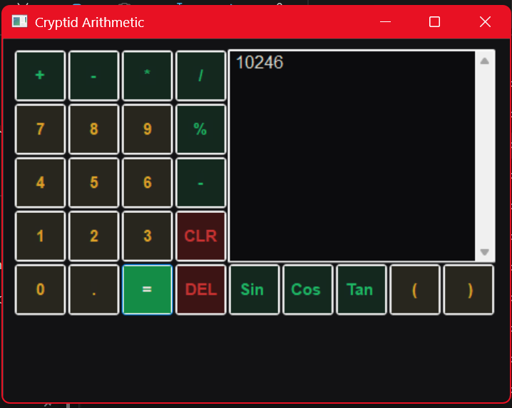
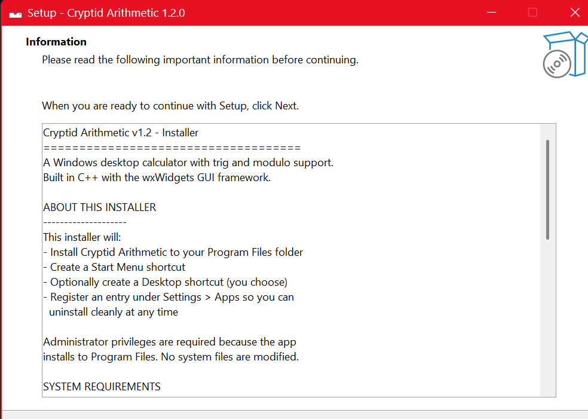

Cryptid Arithmetic

EXPRESSION ENTRY — MODULO, MULTIPLICATION, NESTED PARENTHESES

EVALUATED RESULT — 10246
About
Cryptid Arithmetic is a Windows desktop calculator built in C++17 with the wxWidgets 3.2 GUI framework. It supports four-function arithmetic, trigonometric operations (sin / cos / tan), modulo, parenthesized expressions, and signed-decimal input — all wrapped in a dark "Cryptid" theme with amber numbers, green operators, and red CLR/DEL keys.
This was one of the very first coding projects I built during my early coursework at Full Sail. Years later — with real engine work, version control habits, and production experience under my belt — I came back to it, rebuilt the toolchain end-to-end, and shipped it as a proper v1.2 release. It is the first project published under the Squatchworks GitHub.
My Contributions
- Designed and shipped the entire calculator solo: GUI layout, button grid, calculation engine, input validation, and theming
- Migrated the project to Visual Studio 2022 / MSVC v143 with a modern C++17 baseline
- Configured vcpkg manifest mode with a pinned
builtin-baselineso the wxWidgets dependency builds reproducibly on any developer's machine - Resolved CRT runtime alignment issues (/MD vs /MT) and Whole Program Optimization decoration mismatches that produced ~41 unresolved external symbols at link time, using dumpbin directives analysis
- Authored an Inno Setup installer that lands in Program Files, registers a clean uninstaller, and supports an optional desktop shortcut
- Packaged v1.2.0 as both an installer and a portable ZIP with bundled runtime DLLs, published to GitHub Releases under MIT license with full README, CHANGELOG, and roadmap documentation
Features
- Four-function arithmetic — addition, subtraction, multiplication, division with full input validation
- Trigonometric operations — sin, cos, tan
- Modulo and parentheses — supports compound expressions like
(569 % 7) + (852 * 6 + 2 * 9 - 8) * 2 - Decimal and signed input — fractional values and negative numbers
- Dark "Cryptid" theme — amber numbers, green operators, red CLR/DEL
- wxWidgets GUI — native Windows look, resizable single-window layout
- Inno Setup installer — installs to Program Files, Start Menu shortcut, clean uninstaller
- Portable ZIP build — unzip-and-run, no install required
- Reproducible builds — vcpkg manifest with pinned baseline
Engineering Lessons
The v1.2 build cycle surfaced three lessons worth keeping:
- /MD vs /MT matters. Mixing CRT models with a prebuilt third-party library produces ~40 unresolved external symbol errors. Match the lib's runtime model — wxWidgets vcpkg defaults to /MD.
- /GL (Whole Program Optimization) can introduce spurious __declspec(dllimport) decoration mismatches when linking against /MD libs. Disable for clean Release builds unless every dependency was also built with /GL.
- vcpkg manifest mode is the right answer for reproducible C++ builds. Pin a builtin-baseline so collaborators get byte-identical dependency versions instead of "works on my machine" surprises.
Tools that earned their keep: dumpbin /dependents and dumpbin /directives for diagnosing link failures, and Inno Setup for clean Windows packaging.
Installer

INNO SETUP INSTALLER WIZARD
Cryptid Arithmetic ships as a signed Inno Setup installer that lands the app in Program Files, registers a clean uninstaller under Settings → Apps, and offers an optional desktop shortcut. The installer also ships with a portable ZIP alternative for users who prefer to drop the folder anywhere and run the exe directly.
Roadmap
v1.3 — Fix remaining compiler warnings, add custom app icon and version-info resource, replace std::cout streambuf redirect with direct wxTextCtrl::AppendText, add OutputDebugString hooks for debug builds.
v2.0 — "Squatch Companion UI" — A reimagined UI: a compact, dockable calculator window with an animated Squatch character that delivers answers. Floating always-on-top mode, idle / calculating / error animation states, speech-bubble answer reveal with subtle SFX. Possible migration to SFML or SDL2 for richer animation. Stretch goal: WebAssembly port for embed on this portfolio site.